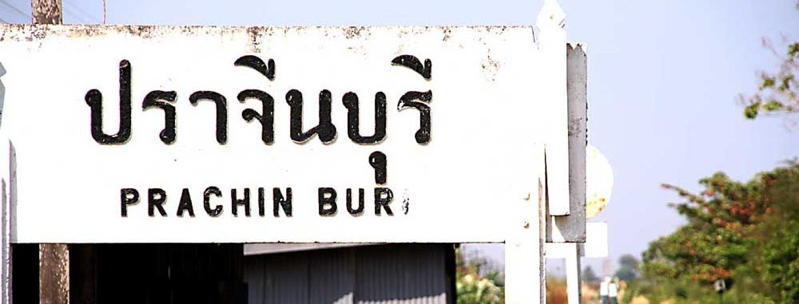
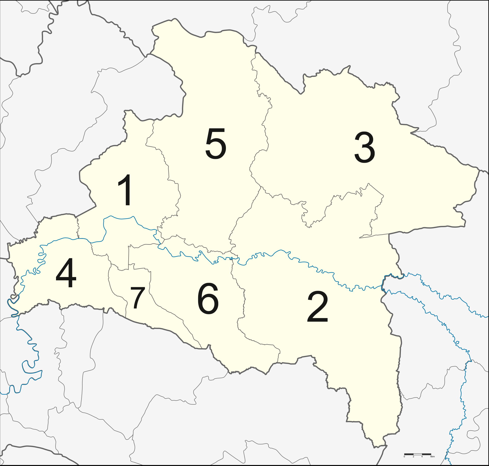

ส่วนที่บอกว่าตรงไหนเป็นของ exercise ไหนอยู่ใน code นะครับ ผมไม่ได้เรียงตามลำดับครับแต่ใส่เป็น comment ไว้

Hello there!! My name is Patarapong Taotong. My nickname is Petch. I am 28 years old. Now I am studying in the Junior Software Developer Boot Camp by Generation Thailand, and the instructor team is from Skooldio which many expert programmers are there. I live in Bangkok now but actually I was born in Prachinburi. I have one dog there. His name is Mee Tang. Let me tell you more about my homwtown: Prachinburi.
Click below image for more information from Wikipedia.

Prachinburi province (Link to Prachinburi web page)
is one of Thailand's seventy-seven provinces (changwat), it lies in eastern Thailand.
Neighboring provinces are (from north clockwise) Nakhon Ratchasima, Sa Kaeo, Chachoengsao, and Nakhon Nayok.
The province is divided into two major parts, the low river valley of the Bang Pakong River, and the higher lands with plateaus and mountains of the Sankamphaeng Range, the southern prolongation of the Dong Phaya Yen mountains. In those areas are also two national parks, Khao Yai and Tab Larn National Park. The total forest area is 1,436 km2 (554 sq mi) or 28.6 percent of provincial area.
The province is divided into seven districts (amphoes).
If you have a plan to go to Prachinburi, do not forget to buy some OTOP product for yourself and/or as a souvnior for your relatives. There are a lot of hight quality handmade product. Explore more about OTOP